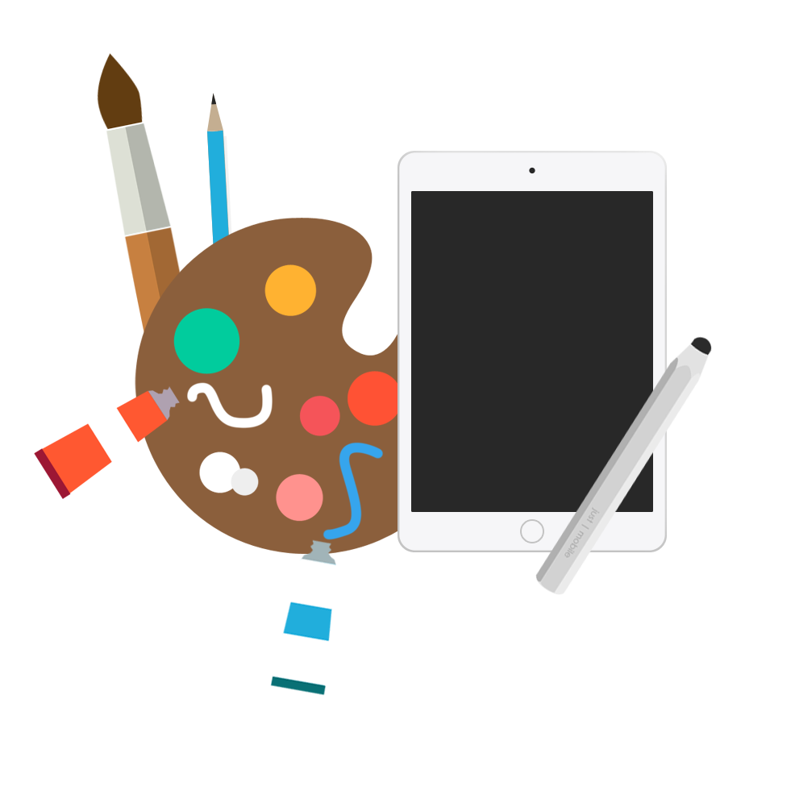
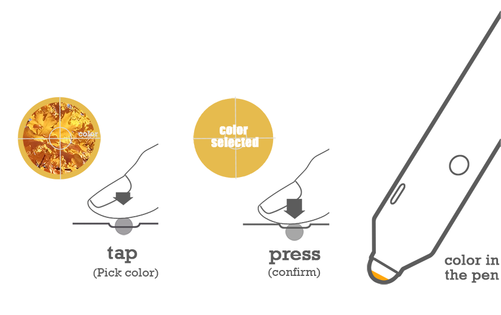
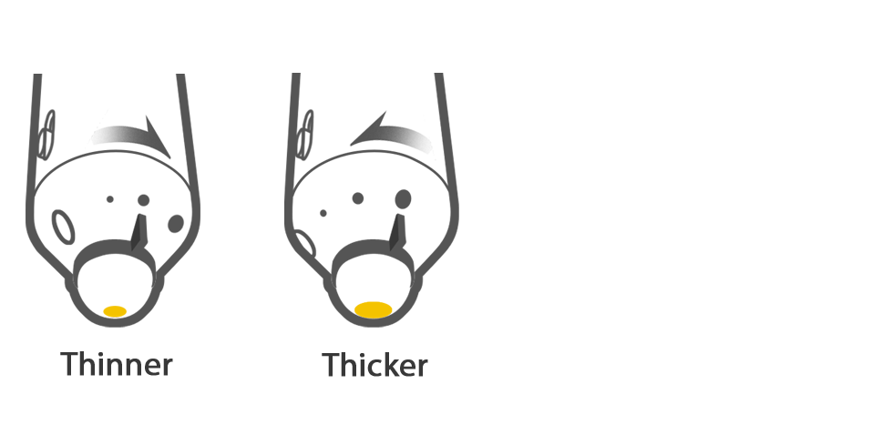
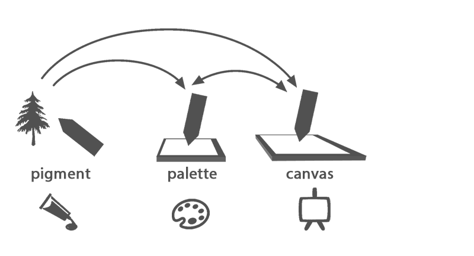
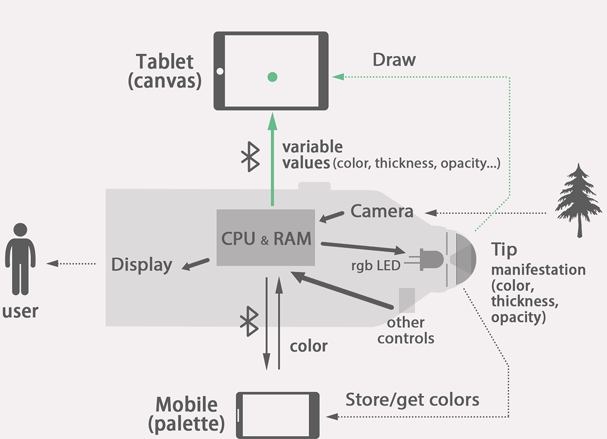
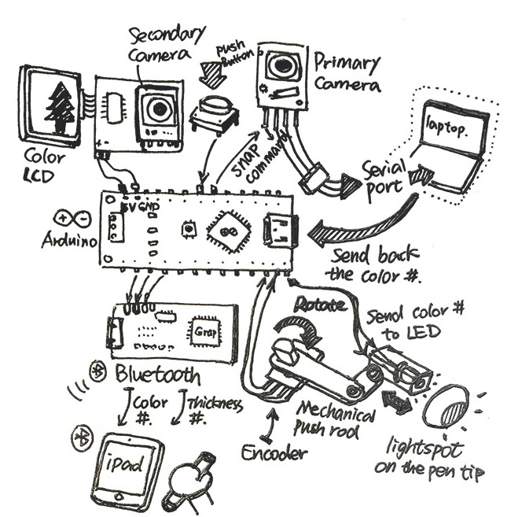

This is an initiative design & research project exploring the possibility of tangible interaction in the digital drawing system. The purpose of the design is to reshape the interaction of digital drawing to give the painter an intuitive interaction with tools that similar to the way of traditional drawing.
The group was 4 HCI students with different technical backgrounds. In the design stage, I was responsible for the design of tangible interaction, industrial design, and the visual presentation. Besides, I led the prototype development, including 3D printing, circuit design, wiring and part of Arduino programming.
In the traditional drawing or illustration, the artist always put their pallete, various pens and tools aside, so they can easily switch their tools to flexibly control the art work.
The digital drawing tools nowadays always arrange various operations that are used during drawing in a menu, which are hidden in the canvas (screen). So when we draw something, we have to continuously go to the menu for adjusting color, stoke, opacity or hardness. This approach of interaction is quite disruptive for artist.
We designed a stylus pen with multiple tangible ways to adjust the color, thickness and pen type on the pen itself rather than in the screen. The tangible and physical operations provide artist a more intuitive drawing experience.
The pen can pick color from real world, just like use pigment on the pen.
You can adjust the thickness of stroke by simply turning the pen tip. And there are more controls to adjust opacity, hardness, pen type and so on.
We use iPad as the canvas, and also introduce phone--a smaller screen as the palette. They are connected as a system.
The tablet (canvas) receives the variable value of the controls (color, thickness etc.) on the pen, and present the effect when the pen tip touch its screen.
The working prototype was implemented by Arduino and other electronic chips. We also developed an iPad drawing APP and a PC program to cooperate with the pen.
We were selected into the exhibition of 2015 TEI Conference,
and we presented our design and working prototype in the
conference at Stanford Design School.
Sketching
Modling & Rendering
3D printing
Arduino Programming
Soldering and Assembling
Testing
Iteration
The project started in October 2014, and finally presented in TEI in January 2015
The team was me(design), Shaohong Cai(hardware), Xuan Luo, and Kerri Zhang(iOS).
Interface is not just screen, it's about how to fit technology into intuitive behaviors